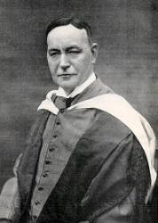

|
|
360神家敬拜之所 |
|
We praise your name, O God of all creation, |
|
|
|
|
|
|
|

360神家敬拜之所
| Tune: | HIGHWOOD |
| Composer: | Richard Runciman Terry (1865-1938) |
| Short Name: | Fred Kaan |
| Full Name: | Kaan, Fred, 1929-2009 |
| Birth Year: | 1929 |
| Death Year: | 2009 |

Hymn writer. His hymns include both original work and translations. He sought to address issues of peace and justice. He was born in Haarlem in the Netherlands in July 1929. He was baptised in St Bavo Cathedral but his family did not attend church regularly. He lived through the Nazi occupation, saw three of his grandparents die of starvation, and witnessed his parents deep involvement in the resistance movement. They took in a number of refugees. He became a pacifist and began attending church in his teens.
Having become interested in British Congregationalism (later to become the United Reformed Church) through a friendship, he was attended Western College in Bristol. He was ordained in 1955 at the Windsor Road Congregational Church in Barry, Glamorgan.
In 1963 he was called to be minister of the Pilgrim Church in Plymouth. It was in this congregation that he began to write hymns. The first edition of Pilgrim Praise was published in 1968, going into second and third editions in 1972 and 1975. He continued writing many more hymns throughout his life.
Dianne Shapiro, from obituary written by Keith Forecast in Independent (http://www.independent.co.uk/news/obituaries/fred-kaan-minister-and-celebrated-hymn-writer-1809481.html)
Tune Information
| Title: | HIGHWOOD |
| Composer: | Richard Runciman Terry |
| Meter: | 11.10.11.10 |
| Incipit: | 56327 16531 23462 |
| Key: | C Major |
| Copyright: | Public Domain |
| Short Name: | Richard Runciman Terry |
| Full Name: | Terry, Richard Runciman, 1865-1938 |
| Birth Year: | 1865 |
| Death Year: | 1938 |
Terry, Richard R.,

was born at Morpeth, Jan.
3, 1868, and was Tate Choral Scholar at King's College, Cambridge. In 1896
he became organist and music-master at Downside R. C. College and Abbey,
Bath; and in 1901 organist and director of the choir at Westminster
Cathedral (R. C.) London. He contributed to A. E. Tozer's Catholic
Hymns, 1898, thirteen tunes and the words of two hymns:—
1. Christ, the Lord, is my true Shepherd. Ps.
xxiii.
2. Peaceful eve, so still and holy. Christmas
Carol. It is marked as D. C. B., i.e. for Downside Coll., Bath.
The tune by Mr. Tozor was published in 1881 to a carol beginning with the
same first line, but otherwise entirely different.